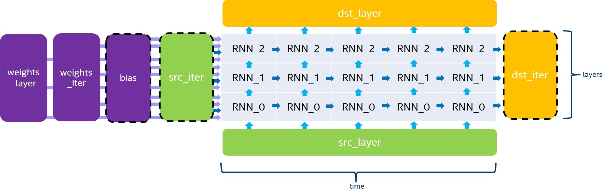

RNN¶
General¶
The RNN primitive computes a stack of unrolled recurrent cells, as depicted in Figure 1. \(\bias\), \(\srciter\) and \(\dstiter\) are optional parameters (the variable names follow the standard Naming Conventions). If not provided, \(\bias\) and \(\srciter\) will default to 0.
The RNN primitive supports four modes for evaluation direction:
left2rightwill process the input data timestamps by increasing orderright2leftwill process the input data timestamps by decreasing orderbidirectional_concatwill process all the stacked layers fromleft2rightand fromright2leftindependently, and will concatenate the output in \(\dstlayer\) over the channel dimension.bidirectional_sumwill process all the stacked layers fromleft2rightand fromright2leftindependently, and will sum the two outputs to \(\dstlayer\).
Even though the RNN primitive supports passing a different number of channels for \(\srclayer\), \(\srciter\), \(\dstlayer\), and \(\dstiter\), we always require the following conditions in order for the dimension to be consistent:
\(channels(\dstlayer) = channels(\dstiter)\),
when \(T > 1\), \(channels(\srciter) = channels(\dstiter)\),
when \(L > 1\), \(channels(\srclayer) = channels(\dstlayer)\),
when using the
bidirectional_concatdirection, \(channels(\dstlayer) = 2 * channels(\dstiter)\).
The general formula for the execution of a stack of unrolled recurrent cells depends on the current iteration of the previous layer (\(h_{t,l-1}\) and \(c_{t,l-1}\)) and the previous iteration of the current layer (\(h_{t-1, l}\)). Here is the exact equation for non-LSTM cells:
where \(t,l\) are the indices of the timestamp and the layer of the cell being executed.
And here is the equation for LSTM cells:
where \(t,l\) are the indices of the timestamp and the layer of the cell being executed.
Cell Functions¶
The RNN API provides four cell functions:
Vanilla RNN, a single-gate recurrent cell,
LSTM, a four-gate long short-term memory cell,
GRU, a three-gate gated recurrent unit cell,
Linear-before-reset GRU, a three-gate recurrent unit cell with the linear layer before the reset gate,
AUGRU, a three-gate gated recurrent unit cell with the attention update gate,
Linear-before-reset AUGRU, a three-gate recurrent unit cell with the linear layer before the reset gate and the attention update gate.
Vanilla RNN¶
A single-gate recurrent cell initialized with dnnl::vanilla_rnn_forward::primitive_desc::primitive_desc() or dnnl::vanilla_rnn_backward::primitive_desc::primitive_desc() as in the following example.
auto vanilla_rnn_pd = dnnl::vanilla_rnn_forward::primitive_desc( engine, aprop, activation, direction, src_layer_desc, src_iter_desc, weights_layer_desc, weights_iter_desc, bias_desc, dst_layer_desc, dst_iter_desc);
The Vanilla RNN cell supports the ReLU, Tanh and Sigmoid activation functions. The following equations defines the mathematical operation performed by the Vanilla RNN cell for the forward pass:
LSTM¶
LSTM (or Vanilla LSTM)¶
A four-gate long short-term memory recurrent cell initialized with dnnl::lstm_forward::primitive_desc::primitive_desc() or dnnl::lstm_backward::primitive_desc::primitive_desc() as in the following example.
auto lstm_pd = lstm_forward::primitive_desc( engine, aprop, direction, src_layer_desc, src_iter_h_desc, src_iter_c_desc, weights_layer_desc, weights_iter_desc, bias_desc, dst_layer_desc, dst_iter_h_desc, dst_iter_c_desc);
Note that for all tensors with a dimension depending on the gate number, we implicitly require the order of these gates to be i, f, \(\tilde c\), and o. The following equation gives the mathematical description of these gates and output for the forward pass:
where \(W_*\) are stored in \(\weightslayer\), \(U_*\) are stored in \(\weightsiter\) and \(B_*\) are stored in \(\bias\).
Note
In order for the dimensions to be consistent, we require \(channels(\srciterc) = channels(\dstiterc) = channels(\dstiter)\).
LSTM with Peephole¶
A four-gate long short-term memory recurrent cell with peephole initialized with dnnl::lstm_forward::primitive_desc::primitive_desc() or dnnl::lstm_backward::primitive_desc::primitive_desc() as in the following example.
auto lstm_pd = dnnl::lstm_forward::primitive_desc( engine, aprop, direction, src_layer_desc, src_iter_h_desc, src_iter_c_desc, weights_layer_desc, weights_iter_desc, weights_peephole_desc, bias_desc, dst_layer_desc, dst_iter_h_desc, dst_iter_c_desc);
Similarly to vanilla LSTM, we implicitly require the order of the gates to be i, f, \(\tilde c\), and o for all tensors with a dimension depending on the gates. For peephole weights, the gates order is i, f, o. The following equation gives the mathematical description of these gates and output for the forward pass:
where \(P_*\) are stored in weights_peephole, and the other parameters are the same as in vanilla LSTM.
Note
If the weights_peephole_desc passed to the primitive descriptor constructor is a zero memory desciptor, the primitive will behave the same as in LSTM primitive without peephole.
LSTM with Projection (or LSTMP)¶
A four-gate long short-term memory recurrent cell with projection initialized with dnnl::lstm_forward::primitive_desc::primitive_desc() or dnnl::lstm_backward::primitive_desc::primitive_desc() as in the following example.
auto lstm_pd = dnnl::lstm_forward::primitive_desc( engine, aprop, direction, src_layer_desc, src_iter_h_desc, src_iter_c_desc, weights_layer_desc, weights_iter_desc, weights_peephole_desc, weights_projection_desc, bias_desc, dst_layer_desc, dst_iter_h_desc, dst_iter_c_desc);
Similarly to vanilla LSTM, we implicitly require the order of the gates to be i, f, \(\tilde c\), and o for all tensors with a dimension depending on the gates. The following equation gives the mathematical description of these gates and output for the forward pass (for simplicity, LSTM without peephole is shown):
where \(R\) is stored in weights_projection, and the other parameters are the same as in vanilla LSTM.
Note
If the weights_projection_desc passed to the primitive descriptor constructor is a zero memory desciptor, the primitive will behave the same as in LSTM primitive without projection.
GRU¶
A three-gate gated recurrent unit cell, initialized with dnnl::gru_forward::primitive_desc::primitive_desc() or dnnl::gru_backward::primitive_desc::primitive_desc() as in the following example.
auto gru_pd = dnnl::gru_forward::primitive_desc( engine, aprop, direction, src_layer_desc, src_iter_desc, weights_layer_desc, weights_iter_desc, bias_desc, dst_layer_desc, dst_iter_desc);
Note that for all tensors with a dimension depending on the gate number, we implicitly require the order of these gates to be u, r, and o. The following equation gives the mathematical definition of these gates.
where \(W_*\) are in \(\weightslayer\), \(U_*\) are in \(\weightsiter\), and \(B_*\) are stored in \(\bias\).
Note
If you need to replace u_t by (1-u_t) when computing h_t, you can achieve this by multiplying \(W_u\), \(U_u\) and \(B_u\) by \(-1\). This is possible as \(u_t = \sigma(W_u \cdot h_{t,l-1} + U_u \cdot h_{t-1, l} + B_u)\), and \(1 – \sigma(a) = \sigma(-a)\).
Linear-Before-Reset GRU¶
A three-gate gated recurrent unit cell with linear layer applied before the reset gate, initialized with dnnl::lbr_gru_forward::primitive_desc::primitive_desc() or dnnl::lbr_gru_backward::primitive_desc::primitive_desc() as in the following example.
auto lbr_gru_pd = dnnl::lbr_gru_forward::primitive_desc( engine, aprop, direction, src_layer_desc, src_iter_desc, weights_layer_desc, weights_iter_desc, bias_desc, dst_layer_desc, dst_iter_desc);
The following equation describes the mathematical behavior of the Linear-Before-Reset GRU cell.
Note that for all tensors with a dimension depending on the gate number, except the bias, we implicitly require the order of these gates to be u, r, and o. For the \(\bias\) tensor, we implicitly require the order of the gates to be u, r, o, and u `.
Note
If you need to replace u_t by (1-u_t) when computing h_t, you can achieve this by multiplying \(W_u\), \(U_u\) and \(B_u\) by \(-1\). This is possible as \(u_t = \sigma(W_u \cdot h_{t,l-1} + U_u \cdot h_{t-1, l} + B_u)\), and \(1 – \sigma(a) = \sigma(-a)\).
AUGRU¶
A three-gate gated recurrent unit cell, initialized with dnnl::augru_forward::primitive_desc::primitive_desc() or dnnl::augru_backward::primitive_desc::primitive_desc() as in the following example.
auto augru_pd = dnnl::augru_forward::primitive_desc( engine, aprop, direction, src_layer_desc, src_iter_desc, attention_desc, weights_layer_desc, weights_iter_desc, bias_desc, dst_layer_desc, dst_iter_desc);
Note that for all tensors with a dimension depending on the gate number, we implicitly require the order of these gates to be u, r, and o. The following equation gives the mathematical definition of these gates.
where \(W_*\) are in \(\weightslayer\), \(U_*\) are in \(\weightsiter\), and \(B_*\) are stored in \(\bias\).
Linear-Before-Reset AUGRU¶
A three-gate gated recurrent unit cell with linear layer applied before the reset gate, initialized with dnnl::lbr_augru_forward::primitive_desc::primitive_desc() or dnnl::lbr_augru_backward::primitive_desc::primitive_desc() as in the following example.
auto lbr_augru_pd = dnnl::lbr_augru_forward::primitive_desc( engine, aprop, direction, src_layer_desc, src_iter_desc, attention_desc, weights_layer_desc, weights_iter_desc, bias_desc, dst_layer_desc, dst_iter_desc);
The following equation describes the mathematical behavior of the Linear-Before-Reset AUGRU cell.
Note that for all tensors with a dimension depending on the gate number, except the bias, we implicitly require the order of these gates to be u, r, and o. For the \(\bias\) tensor, we implicitly require the order of the gates to be u, r, o, and u `.
Considerations for Training¶
When using the RNN API for training, the forward pass should use the forward_training propagation kind, and a workspace should be passed to both the forward pass and the backward pass. Note that after executing the backward pass, the workspace is no more valid and should be populated once again by another forward pass.
The RNN primitive backward pass accumulates gradients to its weight outputs (namely \(\diffweightslayer\), \(\diffweightsiter\), \(\diffweightspeephole\), \(\diffweightsprojection\), \(\diffbias\)). Hence, these tensors should be properly initialized to zero before their first use, and can be reused across calls to accumulate gradients if need be. This behavior can be altered by the RNN flag diff_weights_overwrite. If this flag is set weight gradients will be initialized by zeros by the RNN primitive.
Execution Arguments¶
When executed, the inputs and outputs should be mapped to an execution argument index as specified by the following table.
Primitive input/output |
Execution argument index |
|---|---|
\(\srclayer\) |
DNNL_ARG_SRC_LAYER |
\(\srclayerattention\) |
DNNL_ARG_SRC_LAYER_ATTENTION |
\(\srciter\) |
DNNL_ARG_SRC_ITER |
\(\srciterc\) |
DNNL_ARG_SRC_ITER_C |
\(\weightslayer\) |
DNNL_ARG_WEIGHTS_LAYER |
\(\weightsiter\) |
DNNL_ARG_WEIGHTS_ITER |
\(\weightspeephole\) |
DNNL_ARG_WEIGHTS_PEEPHOLE |
\(\weightsprojection\) |
DNNL_ARG_WEIGHTS_PROJECTION |
\(\bias\) |
DNNL_ARG_BIAS |
\(\dstlayer\) |
DNNL_ARG_DST_LAYER |
\(\dstiter\) |
DNNL_ARG_DST_ITER |
\(\dstiterc\) |
DNNL_ARG_DST_ITER_C |
\(\workspace\) |
DNNL_WORKSPACE |
\(\diffsrclayer\) |
DNNL_ARG_DIFF_SRC_LAYER |
\(\diffsrclayerattention\) |
DNNL_ARG_DIFF_SRC_LAYER_ATTENTION |
\(\diffsrciter\) |
DNNL_ARG_DIFF_SRC_ITER |
\(\diffsrciterc\) |
DNNL_ARG_DIFF_SRC_ITER_C |
\(\diffweightslayer\) |
DNNL_ARG_DIFF_WEIGHTS_LAYER |
\(\diffweightsiter\) |
DNNL_ARG_DIFF_WEIGHTS_ITER |
\(\diffweightspeephole\) |
DNNL_ARG_DIFF_WEIGHTS_PEEPHOLE |
\(\diffweightsprojection\) |
DNNL_ARG_DIFF_WEIGHTS_PROJECTION |
\(\diffbias\) |
DNNL_ARG_DIFF_BIAS |
\(\diffdstlayer\) |
DNNL_ARG_DIFF_DST_LAYER |
\(\diffdstiter\) |
DNNL_ARG_DIFF_DST_ITER |
\(\diffdstiterc\) |
DNNL_ARG_DIFF_DST_ITER_C |
Implementation Details¶
Data Type Support¶
The following table lists the combination of data types supported by the RNN primitive for each input and output memory object.
Propagation |
Cell Function |
Input data |
Recurrent data (1) |
Weights |
Bias |
Output Data |
|---|---|---|---|---|---|---|
Forward / Backward |
All |
f32 |
f32 |
f32 |
f32 |
f32 |
Forward / Backward (2) |
All (3) |
bf16 |
bf16 |
bf16 |
f32 |
bf16 |
Forward |
All (3) |
f16 |
f16 |
f16 |
f16 |
f16 |
Forward inference |
Vanilla LSTM, LSTMP and GRU |
u8 |
u8 |
s8 |
f32 |
u8, f32 |
Forward inference |
Vanilla LSTM, LSTMP |
s8 |
s8 |
s8 |
f32 |
s8, f32 |
With LSTM and Peephole LSTM cells, the cell state datatype is f32, except for the f16 configuration.
In backward propagation, all
diff_*tensors are in f32.Projection LSTM is not supported.
Warning
There might be hardware and/or implementation specific restrictions. Check Implementation Limitations section below.
Data Representation¶
In the oneDNN programming model, the RNN primitive is one of a few that support the placeholder memory format dnnl::memory::format_tag::any (shortened to any from now on) and can define data and weight memory objects format based on the primitive parameters.
The following table summarizes the data layouts supported by the RNN primitive.
Propagation |
Input/Output Data |
Recurrent Data |
Layer and Iteration Weights |
Peephole Weights and Bias |
Projection LSTM Weights |
|---|---|---|---|---|---|
Forward / Backward |
|||||
Forward |
|||||
Backward |
While an RNN primitive can be created with memory formats specified explicitly, the performance is likely to be sub-optimal. When using any, it is necessary to first create an RNN primitive descriptor and then query it for the actual data and weight memory objects formats.
Note
The RNN primitive supports padded tensors and views. So even if two memory descriptors share the same data layout, they might still be different.
Post-Ops and Attributes¶
Currently post-ops and attributes are only used by the int8 variants of LSTM and GRU. See the markdown RNN int8 inference example for more details on how to use and set these quantization parameters.
Implementation Limitations¶
Refer to Data Types for limitations related to data types support.
Bias must always be present (that is, the corresponding memory descriptor argument cannot be zero memory descriptor when the RNN primitive descriptor is initialized).
CPU
oneDNN supports s8 as input data only on systems with Advanced Matrix Extension(AMX) support.
Projection LSTM for bf16 data type is not supported.
f16 data type is not supported.
GPU
No support for AUGRU.
No support for Peephole LSTM and Projection LSTM.
Int8 support is provided for LSTM only.
Bias and cell state of bf16 data type is not supported.
Example¶
This C++ API example demonstrates how to create and execute an LSTM RNN primitive in forward training propagation mode.
Key optimizations included in this example:
Creation of optimized memory format from the primitive descriptor.